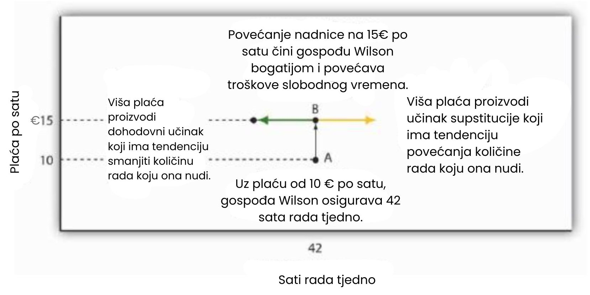
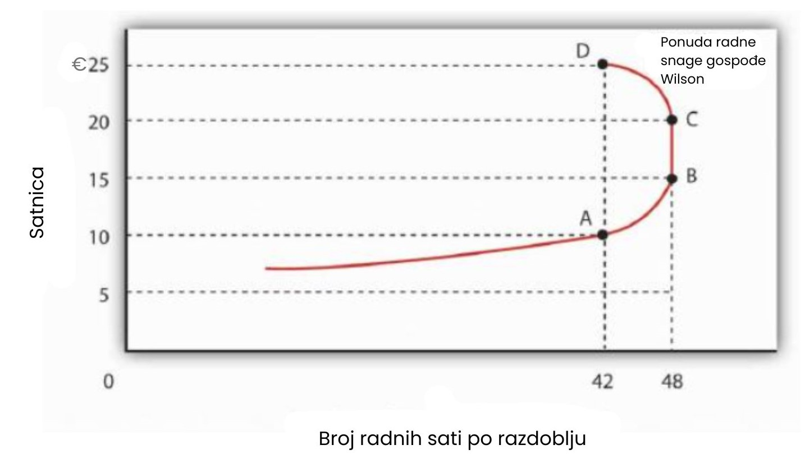

Ponuda radne snage
Potražnja za radom jedan je od čimbenika koji određuju ravnotežnu nadnicu i ravnotežnu količinu rada na savršeno konkurentnom tržištu. Ponuda rada, naravno, drugi je čimbenik.
Ekonomisti gledaju na ponudu rada kao na problem u kojem pojedinci vagaju trošak propuštene prilike različitih aktivnosti kojima mogu ispuniti raspoloživo vrijeme i odlučuju kako će ga rasporediti. Svatko ima 24 sata dnevno. Postoji mnogo načina na koje možemo iskoristiti svoje vrijeme: možemo odgajati djecu, raditi, spavati, igrati se ili sudjelovati u volonterskim aktivnostima. Kako bismo pojednostavili analizu, pretpostavit ćemo da pojedinac može provoditi vrijeme samo na dva načina: radom ili slobodnim vremenom. Slobodno vrijeme je vrsta dobra za potrošnju, pojedinci izravno uživaju korist od njega. Rad donosi dohodak, koji se pak može koristiti za kupovinu dobara i usluga koje stvaraju korisnost.
Što osoba više radi, to više zarađuje, ali ima manje slobodnog vremena. Pojedinac koji izabere više slobodnog vremena, zaradit će manje nego što bi inače mogao. Postoji, dakle, kompromis između slobodnog vremena i dohotka koji se može ostvariti radom. Ponudu rada možemo promatrati kao drugu stranu potražnje za slobodnim vremenom: što ljudi više traže slobodnog vremena, to manje rada nude.
Dva su važna aspekta potražnje za slobodnim vremenom koja pomažu u razumijevanju ponude rada:
- Slobodno vrijeme je normalno dobro - ako sve ostalo ostane nepromijenjeno, porast dohotka povećat će potražnju za slobodnim vremenom.
- Alternativni trošak (ili "cijena") slobodnog vremena je nadnica koju pojedinac može zaraditi. Radnik koji može zaraditi 10€ po satu odriče se 10€ dohotka ako iskoristi još jedan sat za slobodno vrijeme. Dakle, nadnica je cijena jednog sata slobodnog vremena. Radnik koji može zaraditi 20€ po satu suočava se s višom cijenom slobodnog vremena.
Dohodovni i supstitucijski učinci
Pretpostavimo da nadnice porastu. Viša nadnica povećava cijenu slobodnog vremena. Vidjeli smo u poglavlju o potrošačkom izboru da potrošači zamjenjuju više drugih dobara za ono čija je cijena porasla. Supstitucijski učinak više nadnice uzrokuje da potrošač zamijeni slobodno vrijeme radom. Drugim riječima, viša nadnica potiče pojedinca da ponudi veću količinu rada.
Logiku ovog supstitucijskog učinka možemo vidjeti kroz pravilo granične odluke. Pretpostavimo da pojedinac razmatra izbor između dodatnog slobodnog vremena i dodatnog dohotka od više rada. Neka MULe označava graničnu korisnost dodatnog sata slobodnog vremena. Koja je cijena dodatnog sata slobodnog vremena? To je nadnica W koju pojedinac propušta zaraditi time što ne radi taj sat. Dodatna korisnost 1 eura vrijednog slobodnog vremena iznosi stoga MULe/W.
Pretpostavimo, na primjer, da je granična korisnost dodatnog sata slobodnog vremena 20, a nadnica 10€ po satu. Tada je MULe/W jednako 20/10, odnosno 2. To znači da pojedinac ostvaruje 2 jedinice korisnosti trošenjem dodatnih 1€ vrijednog vremena na slobodno vrijeme. Za osobu kojoj je nadnica 10€ po satu, 1€ vrijednog slobodnog vremena bio bi ekvivalentan 6 minuta slobodnog vremena.
Neka MUY označava graničnu korisnost dodatnog 1€ dohotka (Y je oznaka koju ekonomisti obično koriste za dohodak). Cijena 1€ dohotka jednostavno je 1€, pa je cijena dohotka PY uvijek jednaka 1. Korisnost je maksimizirana kada se vrijeme između rada i slobodnog vremena rasporedi tako da vrijedi:
Sada pretpostavimo da nadnica poraste s W na W'. To smanjuje graničnu korisnost 1€ vrijednog slobodnog vremena, odnosno MULe/W, tako da će dodatna korisnost od zarađivanja 1€ sada biti veća od dodatne korisnosti 1€ vrijednog slobodnog vremena:
Suočen s nejednakošću u jednadžbi, pojedinac će se odreći dijela slobodnog vremena i provesti više vremena radeći. Međutim, kako to čini, granična korisnost preostalog slobodnog vremena raste, a granična korisnost dodatnog dohotka opada. Pojedinac će nastaviti s tom zamjenom sve dok se obje strane jednadžbe ponovno ne izjednače. Za radnika, supstitucijski učinak povećanja nadnice uvijek smanjuje količinu slobodnog vremena koje konzumira i povećava količinu vremena provedenog radeći. Viša nadnica tako proizvodi pozitivan supstitucijski učinak na ponudu rada.
Ali viša nadnica također ima i dohodovni učinak. Povećana nadnica znači veći dohodak, a budući da je slobodno vrijeme normalno dobro, potražnja za slobodnim vremenom će se povećati. A to znači smanjenje količine rada koja se nudi.
Kod problema ponude rada, dakle, supstitucijski učinak je uvijek pozitivan: viša nadnica potiče veću količinu ponuđenog rada. Dohodovni učinak je, međutim, uvijek negativan: viša nadnica podrazumijeva veći dohodak, a veći dohodak znači veću potražnju za slobodnim vremenom, a više slobodnog vremena znači manju količinu ponuđenog rada. Budući da supstitucijski i dohodovni učinci djeluju u suprotnim smjerovima, nije jasno hoće li povećanje nadnice dovesti do povećanja, smanjenja ili pak nepromijenjene količine ponuđenog rada.
Slika ilustrira suprotno djelovanje supstitucijskog i dohodovnog učinka promjene nadnice s kojom se suočava pojedini radnik. Čistačica Meredith Wilson zarađuje 10€ po satu. Trenutačno radi 42 sata tjedno, u prosjeku, zarađujući 420€.
Supstitucijski i dohodovni učinci utječu na ponudu rada Meredith Wilson kada dobije povišicu. Kod nadnice od 10€ po satu, ona nudi 42 sata rada tjedno (točka A). Kod 15€ po satu, supstitucijski učinak djeluje u smjeru povećanja količine ponuđenog rada, dok dohodovni učinak djeluje u suprotnom smjeru.
Sada pretpostavimo da gospođa Wilson dobije povišicu od 5€, pa njezina nadnica iznosi 15€ po satu. Kao što je prikazano na slici, supstitucijski učinak te promjene nadnice potiče je da poveća količinu rada koju nudi; dio svog slobodnog vremena zamjenjuje dodatnim radnim satima. No, sada je bogatija; može si priuštiti više slobodnog vremena. Kod nadnice od 10€ po satu zarađivala je 420€ tjedno. Taj isti iznos mogla bi zaraditi uz višu nadnicu radeći samo 28 sati. S višim dohotkom svakako si može priuštiti više slobodnog vremena. Dohodovni učinak promjene nadnice stoga je negativan; količina ponuđenog rada se smanjuje. Učinak povećanja nadnice na količinu rada koju gospođa Wilson zapravo nudi ovisi o relativnoj snazi supstitucijskog i dohodovnog učinka promjene nadnice. U sljedećem odjeljku vidjet ćemo što će gospođa Wilson odlučiti učiniti.
Promjene nadnice i nagib krivulje ponude rada
Kako bi izgledala krivulja ponude rada za bilo koju pojedinu osobu? Jedna je mogućnost da će, unutar određenog raspona broja radnih sati, prevladavati supstitucijski učinak. Budući da je granična korisnost slobodnog vremena relativno niska kada se nudi malo radnih sati (odnosno kada se većina vremena posvećuje slobodnom vremenu), potreban je samo mali porast nadnice da bi se pojedinca potaknulo na zamjenu više rada za manje slobodnog vremena. Nadalje, budući da se radi malo sati, dohodovni učinak tih promjena nadnice bit će malen.
Sljedeća slika prikazuje krivulju ponude rada Meredith Wilson. Kod nadnice od 10€ po satu, ona nudi 42 sata rada tjedno (točka A). Povećanje njezine nadnice na 15€ po satu povećava količinu ponuđenog rada na 48 sati tjedno (točka B). Supstitucijski učinak tako nadmašuje dohodovni učinak više nadnice.
Kako se nadnica povećava s 10 na 15 eura po satu, količina rada koju Meredith Wilson nudi raste s 42 na 48 sati tjedno. Između točaka A i B, pozitivni supstitucijski učinak povećanja nadnice nadmašuje negativni dohodovni učinak. Kada nadnica poraste iznad 15€, negativni dohodovni učinak upravo poništava supstitucijski učinak, i krivulja ponude gđe Wilson postaje okomita između točaka B i C. Kada nadnica poraste iznad 20€, dohodovni učinak postaje jači od supstitucijskog učinka, i krivulja ponude se savija unatrag između točaka C i D.
Moguće je da iznad određene razine nadnice negativni dohodovni učinak povećanja nadnice točno poništi pozitivni supstitucijski učinak; u tom bi rasponu viša nadnica imala nulti učinak na količinu ponuđenog rada. Ta mogućnost prikazana je između točaka B i C na krivulji ponude na slici; krivulja ponude gđe Wilson je okomita. Kako nadnice nastavljaju rasti, dohodovni učinak postaje još jači, i dodatna povećanja nadnice smanjuju količinu rada koju ona nudi. Krivulja ponude prikazana ovdje savija se unatrag iznad točke C i tako poprima negativan nagib. Krivulja ponude rada može, dakle, imati uzlazni nagib u dijelu svog raspona, postati okomita, a zatim se saviti unatrag kako dohodovni učinak viših nadnica počne nadjačavati supstitucijski učinak.
Vrlo je vjerojatno da neki pojedinci imaju krivulje ponude rada koje se savijaju unatrag—iznad određene razine nadnice viša nadnica potiče te osobe da rade manje, a ne više. Međutim, krivulje ponude rada na specifičnim tržištima rada uglavnom imaju uzlazni nagib. Kako nadnice u jednoj industriji rastu u odnosu na nadnice u drugim industrijama, radnici premještaju svoj rad prema industriji s relativno višim nadnicama. U toj se industriji nudi veća količina rada. Iako postoje određene iznimke, mobilnost rada između konkurentnih tržišta rada vjerojatno će spriječiti pad ukupnog broja odrađenih sati uslijed rasta nadnica. Stoga ćemo pretpostaviti da krivulje ponude rada na pojedinim tržištima imaju uzlazni nagib.
Pomaci krivulje ponude rada
Koji događaji uzrokuju pomake krivulje ponude rada? Ljudi nude rad kako bi povećali svoju korisnost—isto kao što traže dobra i usluge radi povećanja korisnosti. Krivulja ponude rada pomiče se kao odgovor na promjene u istom skupu čimbenika koji uzrokuju pomake krivulja potražnje za dobrima i uslugama.
Promjene u preferencijama
Promjena u stavu prema radu i slobodnom vremenu može pomaknuti krivulju ponude rada. Ako ljudi odluče da više cijene slobodno vrijeme, radit će manje sati pri svakoj razini nadnice, i krivulja ponude rada pomaknut će se ulijevo. Ako odluče da žele više dobara i usluga, krivulja ponude vjerojatno će se pomaknuti udesno.
Promjene u dohotku
Povećanje dohotka povećat će potražnju za slobodnim vremenom, što će smanjiti ponudu rada. Ovdje moramo biti pažljivi i razlikovati pomake duž krivulje ponude od pomaka same krivulje. Promjena dohotka koja proizlazi iz promjene nadnice prikazana je kao gibanje duž krivulje; ona uzrokuje supstitucijske i dohodovne učinke koje smo već objasnili. No, pretpostavimo da dohodak dolazi iz nekog drugog izvora: osoba se uda ili oženi i dobiva pristup dohotku supružnika, primi nasljedstvo ili dobije na lutriji. Ti nelaboratorni (nevezani uz rad) izvori povećanja dohotka vjerojatno će smanjiti ponudu rada, čime će se krivulja ponude rada tih osoba pomaknuti ulijevo.
Promjene u cijenama povezanih dobara i usluga
Nekoliko dobara i usluga su komplementi radu. Ako, primjerice, trošak brige o djeci (komplement radu) padne, radnicima postaje jeftinije i lakše ići na posao, pa se ponuda rada povećava. Ako aktivnosti za slobodno vrijeme (koje su supstituti rada) postanu znatno jeftinije, pojedinci bi mogli odlučiti koristiti više slobodnog vremena i ponuditi manje rada.
Promjene u broju stanovnika
Povećanje broja stanovnika povećava ponudu rada; smanjenje je smanjuje. Radničke organizacije općenito se protive povećanjima imigracije jer se njihovi čelnici boje da će povećani broj radnika pomaknuti krivulju ponude rada udesno i stvoriti pritisak na pad nadnica.
Promjene u očekivanjima
Jedna od promjena u očekivanjima koja može utjecati na ponudu rada je očekivani životni vijek. Druga je povjerenje u dostupnost mirovinskog sustava (npr. socijalnog osiguranja). Pretpostavimo, primjerice, da ljudi očekuju da će živjeti dulje, ali postanu manje optimistični u vezi s budućim koristima iz sustava socijalnog osiguranja. To bi moglo potaknuti povećanje ponude rada.
Ponuda rada na specifičnim tržištima
Ponuda rada na određenim tržištima može biti pod utjecajem promjena bilo koje od varijabli koje smo već razmotrili—promjena u preferencijama, dohotku, cijenama povezanih dobara i usluga, broju stanovnika i očekivanjima. Uz te varijable koje utječu na ponudu rada općenito, postoje i promjene koje mogu utjecati na ponudu u specifičnim tržištima rada.
Promjena nadnica u srodnim zanimanjima može utjecati na ponudu u drugom zanimanju. Nagli pad nadnica kirurga, primjerice, mogao bi potaknuti više liječnika da se specijaliziraju za obiteljsku medicinu, povećavajući tako ponudu liječnika u tom području. Poboljšane mogućnosti zapošljavanja za žene u drugim područjima očito su smanjile ponudu medicinskih sestara, pomaknuvši krivulju ponude medicinskih sestara ulijevo.
Ponuda rada na određenom tržištu također se može promijeniti zbog promjena u zahtjevima za ulazak u zanimanje. Većina saveznih država u SAD-u, primjerice, zahtijeva da brijači i kozmetičari prođu obuku prije nego što uđu u struku. Uklanjanje takvih zahtjeva povećalo bi ponudu tih radnika. Financijski savjetnici su posljednjih godina zagovarali uvođenje strožih licenci, što bi smanjilo ponudu financijskih savjetnika.
Preferencije radnika prema određenim zanimanjima također mogu utjecati na ponudu rada. Smanjena spremnost na preuzimanje rizika mogla bi smanjiti ponudu rada za rizična zanimanja kao što su poljoprivredni rad (najopasnije zanimanje u SAD-u), policijski posao i vatrogastvo. Povećana želja za radom s djecom mogla bi povećati ponudu odgojitelja, učitelja u osnovnim školama i pedijatara.
Sažetak
- Viša nadnica povećava oportunitetni trošak odnosno cijenu slobodnog vremena i povećava prihode radnika. Učinci te dvije promjene djeluju u suprotnim smjerovima na količinu ponuđenog rada.
- Povećanje nadnice povećava količinu ponuđenog rada putem supstitucijskog učinka, ali smanjuje količinu ponuđenog rada putem dohodovnog učinka. Stoga krivulja individualne ponude rada može imati pozitivan ili negativan nagib, ili može imati dijelove s pozitivnim nagibom, dijelove s negativnim nagibom i okomite dijelove. Iako postoje određene iznimke, krivulje ponude rada na specifičnim tržištima rada uglavnom imaju uzlazni (pozitivan) nagib.
- Krivulja ponude rada pomaknut će se kao rezultat promjene u preferencijama radnika, promjene u nedohodovnom prihodu, promjene u cijenama povezanih dobara i usluga, promjene broja stanovnika ili promjene u očekivanjima.
- Uz učinke navedenih varijabli na ponudu rada, drugi čimbenici koji mogu promijeniti ponudu rada na pojedinim tržištima su promjene nadnica na srodnim tržištima ili promjene u uvjetima za ulazak u zanimanje.